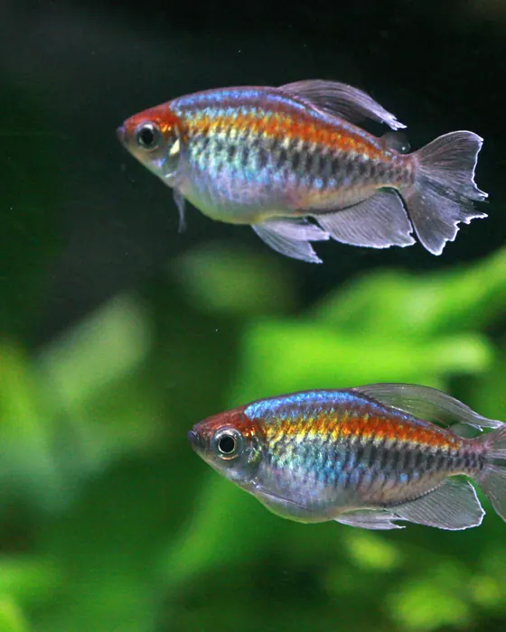
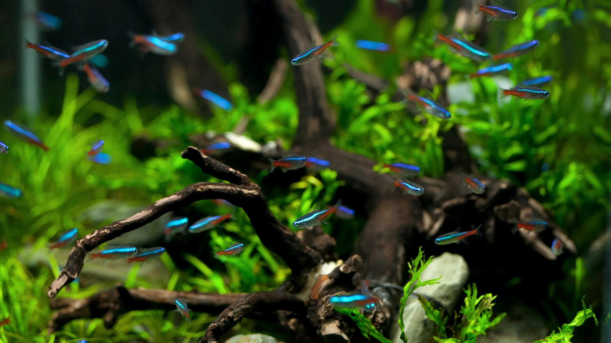
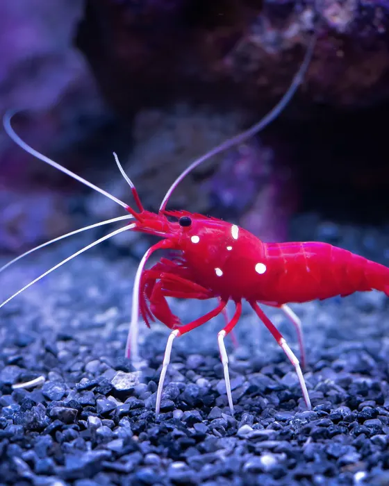
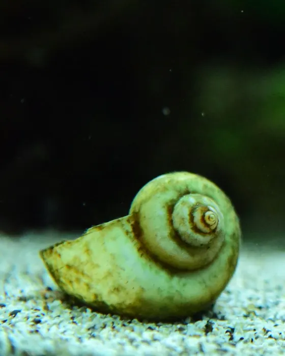
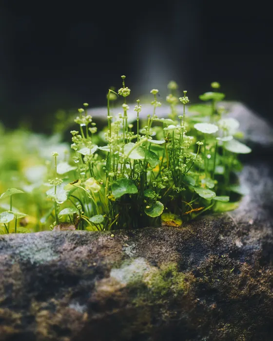
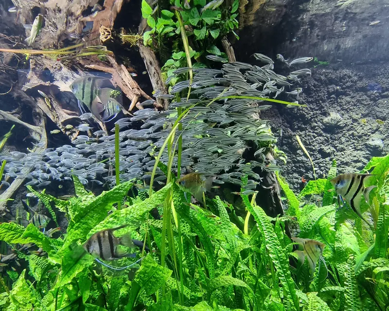
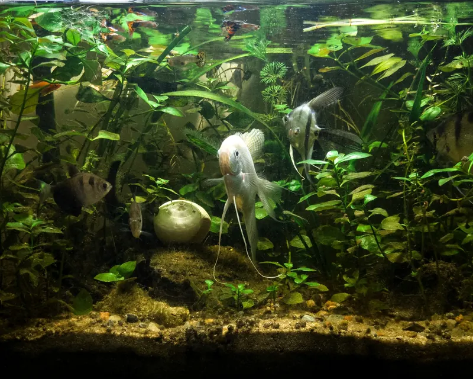
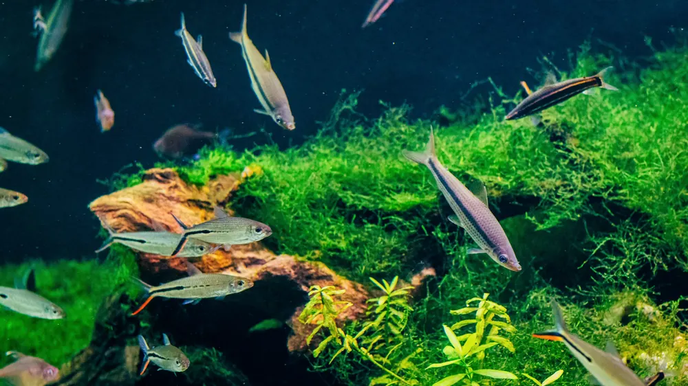

01
Акваріумні рибки
Рибки для спільного акваріума. Підкажемо, хто з ким уживеться.

Рибки, креветки, равлики, рослини та мохи на проспекті Петра Григоренка, 19. Підкажемо, з чого почати, і допоможемо підібрати мешканців.
Мешканці й рослини для вашого акваріума. Якщо не впевнені, що обрати, просто розкажіть про свій акваріум.

Рибки для спільного акваріума. Підкажемо, хто з ким уживеться.

Розкажемо, які умови потрібні креветкам, ще до покупки.

Равлики прикрашають акваріум і живуть поруч із рибками.

Живі рослини й мохи для зеленого, природного акваріума.

У відгуках на Google Maps покупці відзначають консультацію. Розкажіть, який у вас акваріум або який хочете, і ми підкажемо, з чого почати.

Хочете акваріум удома, але не знаєте, з чого почати? Розкажіть, де він стоятиме і якого розміру має бути. Допоможемо підібрати акваріум, рослини та мешканців. У відгуках покупці хвалять і готовий акваріум.

Рибки, креветки, равлики, рослини та мохи в одному магазині на Позняках
4,9 на Google Maps · 435 відгуків
Власниця магазину відповідає на відгуки. У них покупці хвалять:
Проспект Петра Григоренка, 19. Перед візитом можна зателефонувати й запитати про наявність.